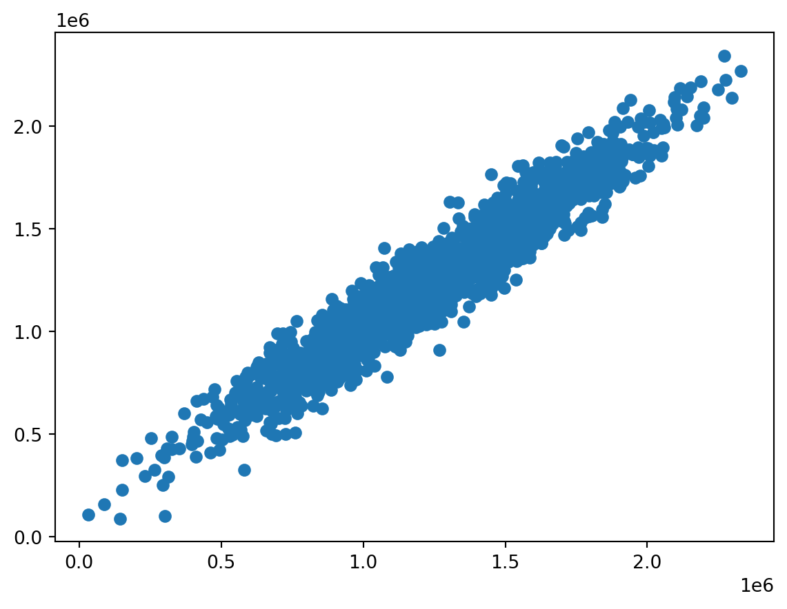

Code
import numpy as np
import pandas as pd
import seaborn as sns
import matplotlib.pyplot as plt
from sklearn.model_selection import train_test_split
from sklearn.linear_model import LinearRegression
from sklearn import metrics
%matplotlib inlineAkash Mittal
November 17, 2023
Linear regression is a supervised learning algorithm used for predicting a continuous outcome variable (also called the dependent variable) based on one or more predictor variables (independent variables). There is an assumption of a linear relation between the independent predictor variables and the dependent outcome variables.
It can be mathematically represented as follows:
\(Y = \mathcal{B}_0 + \mathcal{B}_1X_1 +\mathcal{B}_2X_2 + \mathcal{B}_3X_3 + ... + \mathcal{B}_nX_n + \epsilon\)
where Y is the predicted outcome, \(X_1\), \(X_2\), …, \(X_n\) are predictor variables, \(\mathcal{B}_0, \mathcal{B}_1, \mathcal{B}_2, \ldots , \mathcal{B}_n\) are weights associated to each predicted variables and \(\epsilon\) is the error term.
The goal is to find all \(\mathcal{B}_0, \mathcal{B}_1, \mathcal{B}_2, \ldots , \mathcal{B}_n\) that minimize the sum of squared differences between the predicted and actual values (least squares method).
A few assumptions in linear regression other than the linear relationship are the following:
Linear Regression assumes that the residuals (the differences between predicted and actual values) are normally distributed
The residuals should have constant variance (homoscedasticity).
There should be little or no multicollinearity (high correlation) among the predictor variables.
The relationship between the relationship between the dependent variable and the independent variables is modeled using a nonlinear function.
This can be mathematically represented as following:
\(Y = f(X, \mathcal{B}) +\epsilon\)
Similar to linear regression, the objective in nonlinear regression is often to minimize the difference between the predicted values from the model and the actual observed values. Also evaluation metrics for nonlinear regression are similar to those used in linear regression, such as Mean Squared Error (MSE), Root Mean Squared Error (RMSE), Mean Absolute Error (MAE) and etc.
Some Types of NonLinear relationships can be the following:
Quadratic
Logarithmic
Exponential
For this examples we will look real estate houses and their prices, one of the quintessential applications of Linear Regression. The goal is to predict the price of a house based on some features of a house. This data is a dataset taken from Kaggle as toy example to show this concept.
Loading the Dataset
| Avg. Area Income | Avg. Area House Age | Avg. Area Number of Rooms | Avg. Area Number of Bedrooms | Area Population | Price | Address | |
|---|---|---|---|---|---|---|---|
| 0 | 79545.458574 | 5.682861 | 7.009188 | 4.09 | 23086.800503 | 1.059034e+06 | 208 Michael Ferry Apt. 674\nLaurabury, NE 3701... |
| 1 | 79248.642455 | 6.002900 | 6.730821 | 3.09 | 40173.072174 | 1.505891e+06 | 188 Johnson Views Suite 079\nLake Kathleen, CA... |
| 2 | 61287.067179 | 5.865890 | 8.512727 | 5.13 | 36882.159400 | 1.058988e+06 | 9127 Elizabeth Stravenue\nDanieltown, WI 06482... |
| 3 | 63345.240046 | 7.188236 | 5.586729 | 3.26 | 34310.242831 | 1.260617e+06 | USS Barnett\nFPO AP 44820 |
| 4 | 59982.197226 | 5.040555 | 7.839388 | 4.23 | 26354.109472 | 6.309435e+05 | USNS Raymond\nFPO AE 09386 |
Visualizing the data (which factors are linearly related to Price
Training Linear Regression Model
X = USAhousing[['Avg. Area Income', 'Avg. Area House Age', 'Avg. Area Number of Rooms', 'Avg. Area Number of Bedrooms', 'Area Population']]
y = USAhousing['Price']
X_train, X_test, y_train, y_test = train_test_split(X, y, test_size = 0.4, random_state = 101)
lm = LinearRegression()
lm.fit(X_train, y_train)Model Evaluation - The weights associated to the features
-2640159.796851912| Coefficent | |
|---|---|
| Avg. Area Income | 21.528276 |
| Avg. Area House Age | 164883.282027 |
| Avg. Area Number of Rooms | 122368.678027 |
| Avg. Area Number of Bedrooms | 2233.801864 |
| Area Population | 15.150420 |
Predictions from the Model
<matplotlib.collections.PathCollection at 0x147c2c3a0>
Metrics to Evaluate the Model